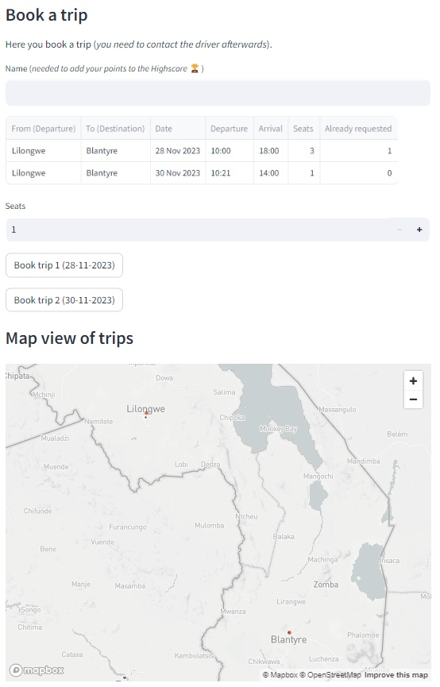

The Booking menu let's you book a planned trip.
Under the menu Booking you can find the following input fields:
Click on the Button of a matching trip to book and to get the credentials of the driver. It is still needed to contact the driver to plan the meeting time and the meetup point for this particular trip.

A map is displayed to show you starting and end points of the available trips.
Your booking results in 5 points which will be added under your name to the Highscore list. Be aware that your name needs to 100% match, if it is not your first offering to be accumulated to the same person on the Highscore list.